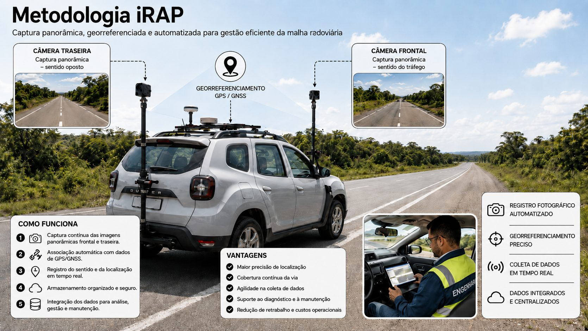
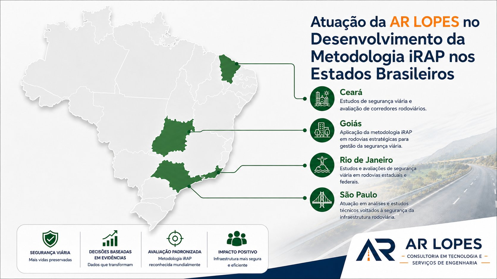

A AR LOPES Consultoria em Tecnologia e Serviços de Engenharia foi fundada em 2023 com o propósito de desenvolver soluções técnicas e tecnológicas voltadas à engenharia rodoviária, atuando especialmente na elaboração de projetos de sinalização viária e dispositivos de segurança.
A empresa nasceu com o objetivo de atender órgãos públicos, empresas de supervisão, projetistas e empresas especializadas em sinalização rodoviária, oferecendo aplicações, sistemas e metodologias que contribuem para a otimização da gestão rodoviária e para o aprimoramento da elaboração de projetos.
Com foco em qualidade técnica, inovação e conformidade normativa, a AR LOPES desenvolve seus trabalhos observando os padrões estabelecidos pelas normas da ABNT, manuais técnicos, instruções normativas e diretrizes definidas pelos órgãos competentes.
Atualmente, a empresa está plenamente preparada para atuar no desenvolvimento de projetos de sinalização rodoviária no padrão DNIT, com especial atenção aos conceitos e critérios adotados no Programa BR-Legal, contribuindo para soluções mais seguras, eficientes e compatíveis com as necessidades da infraestrutura rodoviária brasileira.
Atuação dedicada ao Programa Nacional de Segurança e Sinalização Rodoviária do DNIT.
Projetos em rodovias federais distribuídos por diferentes estados e regiões do país.
Da concepção do projeto executivo ao acompanhamento em campo.
Soluções orientadas à redução de sinistros e à padronização técnica exigida pelo DNIT.
Projetamos e acompanhamos a execução de sinalização horizontal, vertical e dispositivos de segurança viária em rodovias federais brasileiras, dentro do Programa Nacional de Segurança e Sinalização Rodoviária (BR-LEGAL).
Veja o mapa completo da nossa atuação abaixo ↓
O BR-LEGAL é um programa do DNIT voltado ao aumento da segurança em toda a malha rodoviária federal, por meio da implantação e manutenção da sinalização horizontal, vertical e dos dispositivos de segurança viária. Além de melhorar a fluidez do tráfego, o programa tem papel central na prevenção de acidentes.
Estudos da Organização Mundial da Saúde apontam que os acidentes de trânsito podem custar entre 1% e 2% do PIB de alguns países — sem contar os impactos que vão muito além do econômico, como o sofrimento das vítimas e de suas famílias.
A sinalização viária é reconhecida como uma medida de engenharia de baixo custo e alto impacto: rápida de projetar e implantar, com redução imediata de acidentes e ótima relação custo-benefício, além de permitir ganhos de escala ao tratar problemas semelhantes em diferentes trechos.
Como todo dispositivo de sinalização tem vida útil limitada e exige manutenção contínua, o DNIT lançou o BR-LEGAL 2 — a continuação e o aperfeiçoamento do programa original, normatizado pela Instrução Normativa nº 3/DNIT SEDE, de 12 de fevereiro de 2025. É dentro desse programa que a AR LOPES desenvolve seus projetos.
Saiba mais no site do DNITSinalização horizontal, vertical e dispositivos de segurança em toda a malha federal.
Projetos rápidos de elaborar e implantar, com ótima relação custo-benefício.
Normatizado pela IN nº 3/DNIT SEDE (12/02/2025), aperfeiçoa e dá seguimento ao programa original.
O mapa abaixo traz a malha rodoviária federal (Sistema Nacional de Viação / DNIT) em cinza, como referência. Os trechos coloridos — um tom para cada estado — são exatamente os pontos da rodovia onde já executamos projeto, recortados pelo km real do serviço. Clique em um trecho para ver os detalhes.
Cada trecho colorido corresponde ao km exato do projeto (não à rodovia inteira).
Um retrato dos trabalhos de sinalização já entregues pela nossa equipe em rodovias federais.
O SISRODO é uma solução integrada, composta por aplicativo mobile e plataforma web, desenvolvida para modernizar a gestão da sinalização rodoviária. O sistema permite conectar as atividades de campo às rotinas de controle técnico e gerencial, garantindo maior organização, rastreabilidade e agilidade na tomada de decisão.
Por meio do aplicativo, as equipes podem cadastrar sinalizações verticais, sinalizações horizontais e dispositivos de segurança diretamente em campo, com registro fotográfico, geolocalização por GPS e sincronização das informações em tempo real. A solução também possibilita levar projetos desenvolvidos em AutoCAD para o ambiente de campo, facilitando a conferência, atualização e validação das informações durante as atividades operacionais.
Na plataforma web, os dados coletados são centralizados e apresentados por meio de dashboards, relatórios completos e ferramentas de gestão de equipes, permitindo maior controle sobre a sinalização existente, os serviços executados e as necessidades de intervenção. Com isso, o SISRODO contribui para uma gestão mais eficiente, produtiva e precisa da sinalização rodoviária, reduzindo retrabalho, custos operacionais e aumentando a qualidade das informações disponíveis.
Sinalização vertical, horizontal e dispositivos de segurança, com foto, GPS e sincronização em tempo real.
Projetos levados direto pra operação, facilitando conferência, atualização e validação em campo.
Relatórios completos e ferramentas de gestão de equipes centralizados numa plataforma só.
O iRAP — International Road Assessment Programme é uma metodologia internacional voltada à avaliação da segurança viária em rodovias, com foco na identificação de riscos e na definição de intervenções capazes de reduzir sinistros graves e fatais.
Por meio de levantamentos técnicos, imagens georreferenciadas e análise dos atributos físicos da infraestrutura rodoviária, o iRAP permite avaliar o nível de segurança oferecido pela via aos diferentes usuários, incluindo ocupantes de veículos, motociclistas, pedestres e ciclistas.
A metodologia utiliza a Classificação por Estrelas, que indica de forma objetiva o grau de segurança incorporado à rodovia. Quanto maior a classificação, melhores são as condições de proteção oferecidas pela infraestrutura viária. A análise considera elementos como geometria da via, largura de faixas e acostamentos, presença de barreiras de proteção, sinalização, interseções, travessias, obstáculos laterais, velocidade operacional e demais fatores que influenciam diretamente o risco e a gravidade dos sinistros.
A aplicação do iRAP contribui para uma gestão rodoviária mais técnica, preventiva e orientada por dados, permitindo priorizar investimentos, planejar melhorias e direcionar recursos para os trechos com maior potencial de redução de acidentes. Dessa forma, a metodologia apoia a elaboração de programas de segurança viária, planos de intervenção e projetos de infraestrutura mais seguros e eficientes.
Com o uso do iRAP, a avaliação das rodovias deixa de ser apenas corretiva e passa a incorporar uma abordagem proativa, alinhada às melhores práticas internacionais de segurança no trânsito e ao conceito de Sistema Seguro.

A AR LOPES Consultoria em Tecnologia e Serviços de Engenharia possui experiência consolidada na aplicação da metodologia iRAP, tendo desenvolvido estudos em mais de 5.000 km de rodovias em diversos estados brasileiros, incluindo Ceará, São Paulo, Rio de Janeiro e Goiás. Essa atuação reforça a capacidade técnica da empresa na realização de avaliações de segurança viária, tratamento de dados rodoviários e apoio à tomada de decisão em projetos de infraestrutura.
